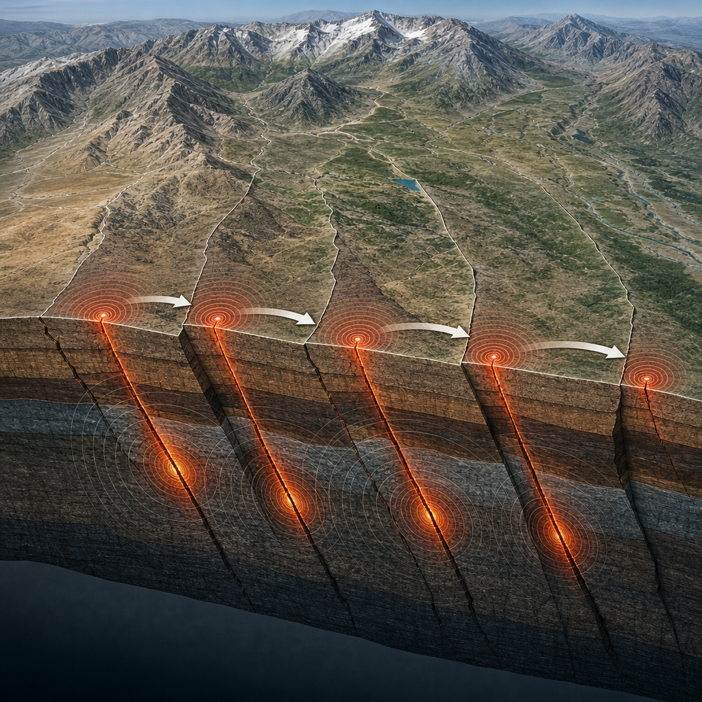

Dieci anni dalla sequenza del 2016: le lezioni della scienza sui terremoti dell’Appennino centrale
Dalla propagazione delle rotture al monitoraggio integrato, le ricerche aiutano a leggere una sequenza complessa senza promettere previsioni impossibili.
Alle 3:36 del 24 agosto 2016 un terremoto di magnitudo 6.0 colpì Amatrice, Accumoli e molti altri paesi dell’Italia centrale. Quella scossa non rimase un evento isolato: aprì una sequenza sismica, cioè una successione di terremoti collegati nello spazio e nel tempo, che fu la più forte osservata in Italia dopo il terremoto dell’Irpinia del 1980.
La sequenza si sviluppò in più fasi. Dal 24 agosto al 30 ottobre la rottura coinvolse progressivamente più faglie: prima l’evento di Amatrice-Accumoli, poi quelli di Visso del 26 ottobre e infine il terremoto di magnitudo 6.5 verso Norcia del 30 ottobre, il più forte dell’intera sequenza. A gennaio 2017 l’attività riprese nell’area di Campotosto, più a sud, con diversi eventi fino a magnitudo 5.5.
Una rottura distribuita nel tempo
Il confronto con l’Irpinia chiarisce uno degli aspetti più importanti. Nel 1980 la scossa principale fu il risultato della rottura di almeno tre segmenti di faglia in meno di un minuto, raggiungendo una magnitudo complessiva di 6.9. Nel 2016 un processo per certi aspetti analogo si sviluppò invece nell’arco di alcuni mesi.
Se l’intera struttura del 2016 si fosse rotta in un solo evento il 24 agosto, la magnitudo complessiva sarebbe stata superiore a 6.6 e l’area coinvolta fin dall’inizio sarebbe stata molto più ampia. L’evoluzione mostrò quindi quanto sia necessario interpretare una sequenza con prudenza. In questa circostanza, le misure adottate dalla Protezione Civile contribuirono a evitare ulteriori vittime durante i forti terremoti del 26 e del 30 ottobre.
Le esperienze di Umbria-Marche del 1997 e dell’Emilia del 2012 avevano già indicato che faglie vicine possono attivarsi a distanza di ore o giorni, producendo nuovi crolli e nuove conseguenze. Nel 2016 questa lezione è diventata centrale nella gestione dell’emergenza.

Monitorare un sistema che cambia
Durante una crisi di questo tipo non basta misurare i singoli terremoti. Occorre comprendere un sistema che cambia continuamente: ogni nuova scossa capace di ampliare l’area attivata richiede di ricalibrare il monitoraggio e aggiornare le interpretazioni.
Per la prima volta l’INGV, insieme ad altri Enti e Università, realizzò un monitoraggio fortemente integrato. Furono usate reti permanenti e temporanee per mappare la sismicità in profondità, rilievi di superficie, dati geodetici, cioè misure delle deformazioni del terreno, e dati satellitari. Questa integrazione consentì di seguire la sequenza quasi in tempo reale, dalla superficie fino alle profondità ipocentrali, dove hanno origine i terremoti.
L’istituzione immediata di un’Unità di Crisi interna, composta da personale scientifico, tecnico, logistico e amministrativo, aiutò a coordinare le attività di emergenza. I dati raccolti venivano integrati rapidamente sia per fornire alla Protezione Civile informazioni utili, sia per capire meglio l’evoluzione della sequenza. La risposta dipende anche dalla capacità di far lavorare insieme reti, dati, competenze e persone.
L’Appennino non ha una sola faglia
I dati GNSS, ottenuti attraverso sistemi satellitari di posizionamento, mostrano che la deformazione a lungo termine interessa una fascia larga circa 50 chilometri attraverso l’Appennino centrale. All’interno di questa fascia non sembra esistere una sola faglia: sono probabilmente presenti due o tre sistemi quasi paralleli, orientati tra nord-sud e nordovest-sudest, che possono attivarsi in momenti diversi.
Nel 1703 si attivò un sistema più occidentale, mentre nel 2016 fu coinvolto quello del Monte Vettore, in una posizione più centrale. Nessun singolo sistema sembra assorbire da solo tutta l’estensione misurata geodeticamente: la deformazione deve quindi distribuirsi su più faglie. Per Amatrice, Norcia, L’Aquila e molti altri centri appenninici, questo significa poter risentire di terremoti generati da strutture diverse.
Non è possibile dire quale sistema si attiverà per primo in futuro. I dati geodetici e paleosismologici, cioè gli studi sui terremoti antichi conservati nelle tracce geologiche, indicano però che a scala regionale servono secoli di accumulo della deformazione per arrivare a eventi di magnitudo intorno a 6.5.
La pericolosità sismica indica quanto un territorio possa essere interessato da forti scuotimenti. Non può essere eliminata. La vulnerabilità, cioè la predisposizione di edifici e costruzioni a subire danni, può invece essere ridotta.
Le tracce nel paesaggio e le immagini del sottosuolo
Le tracce dei terremoti non restano soltanto nei cataloghi sismici: si trovano anche nel paesaggio. Il confronto tra le deformazioni prodotte nel 2016 e le forme geologiche e geomorfologiche costruite in centinaia di migliaia di anni mostra una stretta relazione tra fagliazione superficiale ed evoluzione del rilievo.
Già nei primi anni Duemila gli studi paleosismologici descrivevano la faglia del Monte Vettore come una struttura lunga circa 30 chilometri, articolata in segmenti e apparentemente dormiente, ma compatibile con terremoti di magnitudo intorno a 6.5. La sequenza del 2016 ha mostrato il valore di quelle conoscenze: molti elementi utili a capire ciò che stava avvenendo erano già disponibili.
Nel 2016 le rotture superficiali furono riconosciute e mappate lungo oltre 30 chilometri tra Accumoli e Ussita. Rappresentano l’espressione in superficie della deformazione associata alle faglie sismogenetiche, cioè le faglie capaci di generare terremoti. I rigetti, gli spostamenti relativi dei due lati della faglia, furono in media di alcune decine di centimetri, con massimi locali fino a circa 2 metri.
Per ricostruire la geometria delle faglie in profondità sono state usate anche tecniche di tomografia sismica, che ricavano immagini del sottosuolo studiando il percorso delle onde sismiche. Dopo il 2016, l’intelligenza artificiale è stata applicata in modo sistematico all’enorme quantità di dati raccolti. Metodi di apprendimento automatico e profondo hanno riconosciuto e localizzato oltre 900 mila terremoti, permettendo di ricostruire le faglie coinvolte con grande dettaglio.
Queste immagini del sottosuolo vanno comunque interpretate con cautela. L’esperienza della sequenza ha però accelerato l’introduzione di questi metodi nel monitoraggio della sismicità in tempo reale in Italia.
Fluidi, aftershock e limiti della previsione
Un’altra linea di ricerca riguarda i fluidi che circolano nella crosta e il loro possibile ruolo nell’interazione fra faglie vicine. La loro presenza modifica la propagazione delle onde sismiche. Le variazioni dell’attenuazione, cioè della riduzione dell’energia delle onde durante il loro percorso, sono state quindi studiate per cercare segnali di possibile migrazione di fluidi pressurizzati lungo il sistema di faglie.
I risultati suggeriscono che la sequenza di Amatrice-Visso-Norcia-Capitignano del 2016-2017 possa far parte di un processo di redistribuzione e diffusione di fluidi sovrapressurizzati, articolato in più impulsi. È un filone da trattare con cautela: in futuro il monitoraggio di parametri come l’attenuazione potrebbe contribuire a riconoscere cambiamenti nell’evoluzione di una sequenza e a una valutazione più dinamica della pericolosità.
Non possiamo prevedere quando avverrà il prossimo forte terremoto. Possiamo però migliorare la stima delle faglie che, nel lungo periodo, hanno una maggiore probabilità di attivarsi. Sono inoltre migliorati i modelli statistici usati per stimare la probabilità degli aftershock, le scosse successive a un forte terremoto. Questi strumenti sono utili durante una sequenza, ma non permettono di prevedere i futuri forti terremoti nel breve termine.
Il terremoto del 24 agosto 2016 non fu preceduto da foreshock riconoscibili, cioè scosse che precedono l’evento principale, nei giorni o nelle ore immediatamente precedenti. Sequenze simili possono dunque iniziare ed evolvere in modi molto diversi.
La lezione più concreta
Dal 2016 non si è verificato un nuovo terremoto crostale di magnitudo pari o superiore a 6 con conseguenze paragonabili. Questo intervallo, però, non deve diminuire l’attenzione. Il tempo tra un terremoto e l’altro dovrebbe essere usato per mettere in sicurezza il patrimonio costruito, a partire dalle aree a maggiore pericolosità.
La lezione più concreta della sequenza del 2016 è che la pericolosità non può essere eliminata, mentre la vulnerabilità può essere ridotta. Le conoscenze sulle faglie, il monitoraggio integrato, le tracce nel paesaggio e le nuove analisi dei dati sono strumenti essenziali per comprendere meglio il rischio. Ma la riduzione delle conseguenze passa anche dalla sicurezza del costruito.
Questo articolo l'hai letto sul blog di Meteo Radar: un'app che ti mostra da dove vengono i numeri, invece di limitarsi a dartelo. E ogni mattina ne trovi uno nuovo come questo.